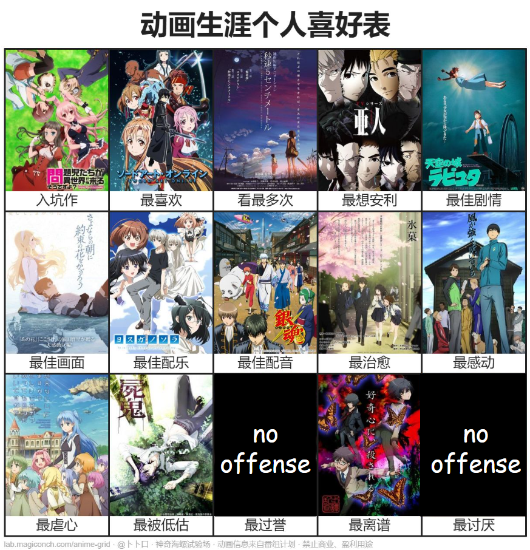

watchlist
Anime
A quiet shelf: mostly grounded, strange, lonely, or cleanly constructed shows. The Hanekawa trace is on the home page; this room keeps the recommendations.
catalog
preference
One image note

watchlist
A quiet shelf: mostly grounded, strange, lonely, or cleanly constructed shows. The Hanekawa trace is on the home page; this room keeps the recommendations.
catalog
preference
